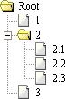

This tree widget is based on objects and all html code is generated from a js structure. To create a tree you won't have to write a single line of html however you will have to learn how to to create the tree and treeItem objects.
The tree(s) needs to be create during the initial load phase of the page. This is accomplished by creating a
WebFXTree object and then add WebFXTreeItems to it. Once all items has been added
document.write is used to generate the html code and insert it into the page.
var tree = new WebFXTree('Root');
tree.add(new WebFXTreeItem('Tree Item 1'));
tree.add(new WebFXTreeItem('Tree Item 2'));
tree.add(new WebFXTreeItem('Tree Item 3'));
document.write(tree);
A folder is created by adding a new tree item to a already created tree item. However since we need to keep a reference to this tree item object (so that we can add tree items to it, and make it a folder) we cannot create the new object inside the add method. So instead we first create the new tree item object and then we add it to the tree.

var tree = new WebFXTree('Root');
/* Add tree item to tree */
tree.add(new WebFXTreeItem('1'));
/* Create a new folder and add it to tree */
var folder = new WebFXTreeItem('2')
tree.add(folder);
/* Add tree items to folder */
folder.add(new WebFXTreeItem('2.1'));
folder.add(new WebFXTreeItem('2.2'));
folder.add(new WebFXTreeItem('2.3'));
/* Add another tree item to tree */
tree.add(new WebFXTreeItem('3'));
document.write(tree);
Since I first published this tree control I've been getting a lot of requesters about making it contain
only folders. So I added a setBehavior method to it. The example below is an exact copy of the one above,
with the one exception that this uses tree.setBehavior('explorer');
var tree = new WebFXTree('Root');
/* Change the behavior of the tree */
tree.setBehavior('explorer');
/* Add tree item to tree */
tree.add(new WebFXTreeItem('1'));
/* Create a new folder and add it to tree */
var folder = new WebFXTreeItem('2')
tree.add(folder);
/* Add tree items to folder */
folder.add(new WebFXTreeItem('2.1'));
folder.add(new WebFXTreeItem('2.2'));
folder.add(new WebFXTreeItem('2.3'));
/* Add another tree item to tree */
tree.add(new WebFXTreeItem('3'));
document.write(tree);
Some times you might want to combine the two styles, or make some of the folders/items have a different
icon than the default. To achieve that set the object.icon property to an uri, or to a javascript
variable containing one. To change the open icons for folders use object.openIcon.
var tree = new WebFXTree('Root');
tree.setBehavior('explorer');
tree.icon = 'http://webfx.eae.net/images/notepad.gif';
tree.add(new WebFXTreeItem('1'));
var folder = new WebFXTreeItem('2')
tree.add(folder);
var t21 = new WebFXTreeItem('2.1');
/* Change the icon */
t21.icon = webFXTreeConfig.fileIcon;
folder.add(t21);
var t22 = new WebFXTreeItem('2.2');
/* Change the icon */
t22.icon = webFXTreeConfig.fileIcon;
folder.add(t22);
var t23 = new WebFXTreeItem('2.3');
/* Change the icon */
t23.icon = webFXTreeConfig.fileIcon;
folder.add(t23);
tree.add(new WebFXTreeItem('3'));
document.write(tree);
History & Introduction
Usage
API
Implementation
Demo
Download